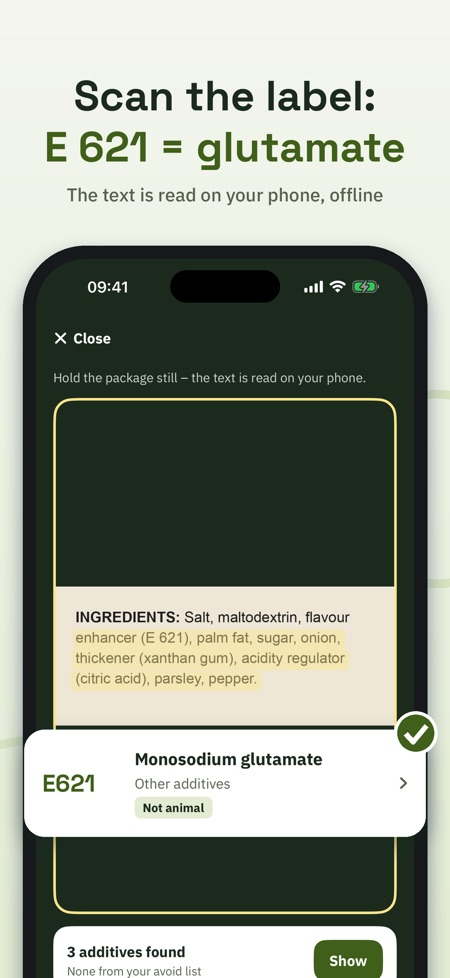
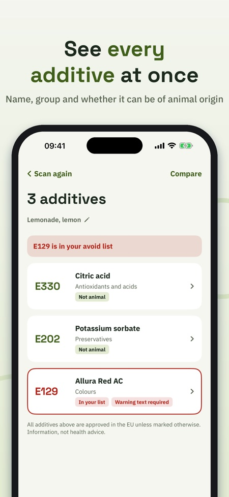
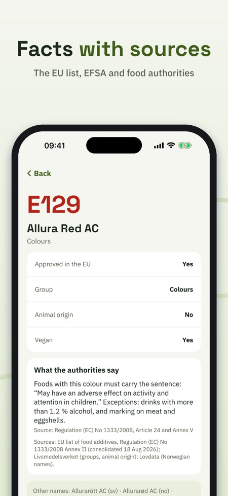

Scan labels, know additives. Point the camera at the ingredients list and see straight away what every E-number is. All 339 additives on the EU list, with sources. Works offline.



What is E 471? Is E 120 vegan? E-koll reads the ingredients list with the camera and explains every additive – calmly, briefly and with a source.
Without a purchase: 5 scans a day, plus search and facts on every additive, groups and guides. E-koll Full (one-time purchase, no subscription): unlimited scans, avoid list, history and comparison.
SCAN THE LABEL
Point the camera at the ingredients. The text is read on your iPhone, even without internet. E-koll finds E-numbers (E 330) and names (citric acid) in Swedish, Norwegian, Danish, Finnish, German and English. No image is saved or sent.
EVERY ADDITIVE ON THE EU LIST
339 E-numbers from the EU regulation on food additives, with names in six languages, group and whether the additive can be of animal origin. Where an authority says more, it is shown with its source: for example the warning sentence for six colours, that titanium dioxide (E 171) is no longer allowed in food, and the labelling rules for sweeteners and sulphites.
SEARCH AND BROWSE
Search by number or name in any language. Browse six groups: colours, preservatives, antioxidants and acids, thickeners and emulsifiers, sweeteners and others.
YOUR OWN AVOID LIST
Pick the additives you want to avoid – for your own reasons. Quick picks: colours with a warning, may be of animal origin, sweeteners, sulphites, nitrites. Every scan marks them clearly.
HISTORY AND COMPARISON
Name a scan and find it again. Compare two labels side by side.
LEARN
Short guides: what the E means, how an additive is approved, how to read an ingredients list, the colour warning and vegan or not.
E-koll gives information, not health advice. Approved in the EU is the starting point. The app is independent and not affiliated with the EU, EFSA or any food authority.